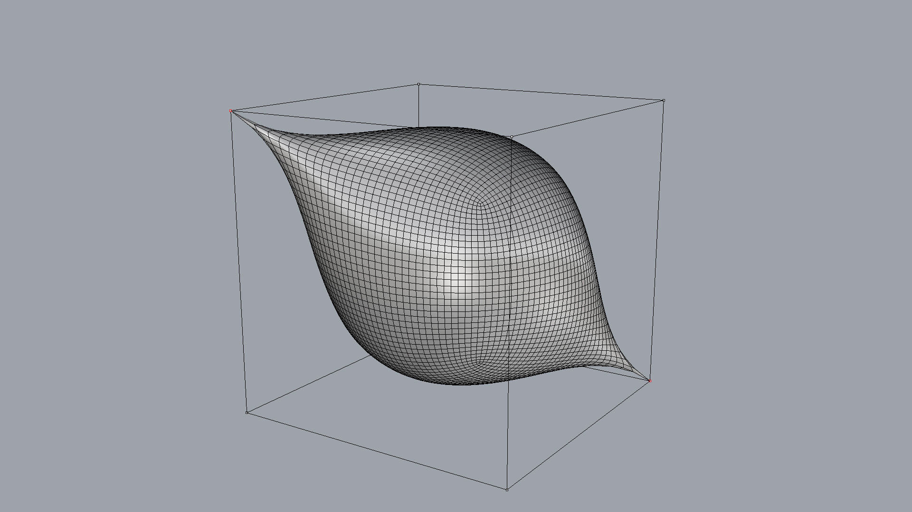

Subd mesh modeling

"""Mesh subdivision.
author : Tom Van Mele
email : van.mele@arch.ethz.ch
"""
from __future__ import print_function
from __future__ import division
from functools import partial
import compas_rhino
from compas.datastructures import Mesh
from compas.topology import mesh_subdivide
# make a control mesh
mesh = Mesh.from_polyhedron(6)
# give it a name
# and set default vertex attributes
mesh.attributes['name'] = 'Control'
mesh.update_default_vertex_attributes({'is_fixed': False})
# make a partial function out of compas_rhino.mesh_draw
# (a function with some of the parameters already filled in)
# that can be used more easily to redraw the mesh
# with the same settings in the update loop
draw = partial(
compas_rhino.mesh_draw,
layer='SubdModeling::Control',
clear_layer=True,
show_faces=False,
show_vertices=True,
show_edges=True)
# draw the control mesh
# with showing the faces
draw(mesh)
# allow the user to change the attributes of the vertices
# note: the interaction loop exits
# when the user cancels the selection of mesh vertices
while True:
keys = compas_rhino.mesh_select_vertices(mesh)
if not keys:
break
compas_rhino.mesh_update_vertex_attributes(mesh, keys)
draw(mesh, vertexcolor={key: '#ff0000' for key in mesh.vertices_where({'is_fixed': True})})
# make a subd mesh (using catmullclark)
# keep the vertices fixed
# as indicated by the user
fixed = mesh.vertices_where({'is_fixed': True})
subd = mesh_subdivide(mesh, scheme='catmullclark', k=5, fixed=fixed)
# give the mesh a (different) name
subd.attributes['name'] = 'Mesh'
# draw the result
compas_rhino.mesh_draw_faces(
subd,
layer='SubdModeling::Mesh',
clear_layer=True,
join_faces=True
)